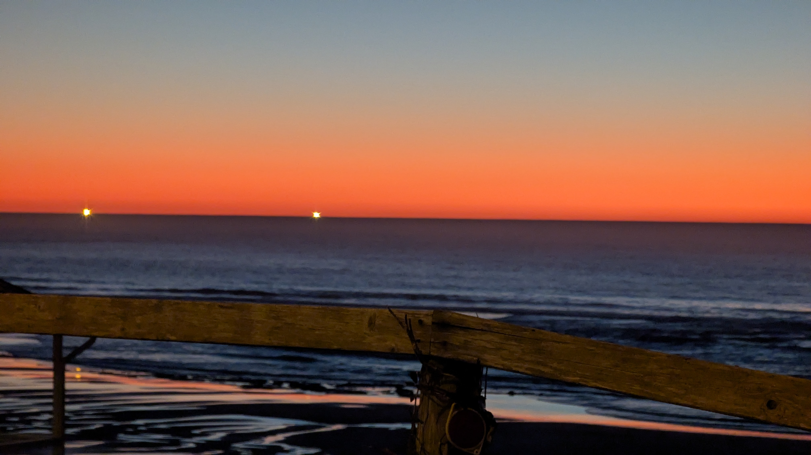

Ope...A Life
4
#pnw
Yesterday morning we woke up early (or, more correctly, I woke up early and Stacy woke up at her regular time), grabbed some donuts from Depoe Baykery (love the name!), and we went to Depoe Bay to look for some whales.
It should be noted that prime whale watching time is mid-December to mid-January and April through May so we were a little late to the party and looked for whales on their way to Baja who were similarly delayed (though probably not because they'd picked up pastries at the best bakery in the area).
No luck. Though we did see the Coast Guard hanging around, running some practice sessions towing a boat through the narrow passage to the bay.

It's cool watching them practice this. The channel they have to navigate is shallow and narrow. Oftentimes they need to line everything up then wait for the correct set of waves to get through safely. Check out this video of what it looks like from the boat being towed.
It's also neat to note the number of birds chilling on the water. The video at the top of this page doesn't have the greatest resolution, but you can still see a small number of the many birds that were out there in the lower right-hand corner of the video. They're just bobbing along, riding the swells, waiting for breakfast to swim on by.
#pnw

We've had four straight weeks of sun on the coast. Tomorrow the clouds and rain return.
#di.nota
Comet Atlas Caught in the Act of Disintegration
The nucleus of Comet ATLAS (C/2024 G3) held together during a brutal perihelion but not for long. Lionel Majzik of Hungary was the first to report and record dramatic changes in the comet between January 18th and 19th. The bright, strongly condensed head rapidly became more diffuse, a sure sign that its nucleus was disintegrating based on past observations of crumbling comets. His superb sequence, photographed remotely from Chile, clearly reveal the dramatic transformation, which was later confirmed by Australian observers.
Tamara Thomsen was 24 feet underwater when she spotted it: the decaying end of a dugout canoe, a great white oak carved some 1,200 years ago. It was jutting out of a sandy ridge in Wisconsin’s Lake Mendota—a body of water skirting Madison, the state capital—and she knew it was a remarkable find. “What I did not understand was the breadth of the discovery.”
How Does a Caterpillar Turn into a Butterfly?
To become a butterfly, a caterpillar first digests itself. But certain groups of cells survive, turning the soup into eyes, wings, antennae and other adult structures.
Why Americans Don’t Walk: A Forgotten Centennial
One hundred years ago, everyone walked in Los Angeles. Some people drove too, but the rules favored the walkers. A dense and extensive network of street railways made walking practical for most people. It was not the product of car culture, which was a nascent force. The public did not ask for it, and no referendum was held about it. Rather, it was the pet project of LA’s most successful car salesman: Paul G. Hoffman, the owner of America’s biggest Studebaker dealership. He hired a graduate student, Miller McClintock, to write it. And we don’t have to guess about Hoffman’s intentions, because he stated them himself. He commissioned the ordinance to sell more cars.
#ope
We euthanized Snowflake one year ago.
Because we did the right thing, and because she was such an amazing part of our lives, and because she was family (not the kind of family where we're fur parents and she's our fur baby... that's not my bag), and because we're trying to celebrate all that, I'm calling today Kill Kitty Day.
#di.nota #minnesota
The scientists reported using data from the MeerKAT radio telescope array in South Africa to track the slight changes in the timing of radio waves coming from more than 80 pulsars—rapidly spinning, ultra-dense neutron stars. As low-frequency gravitational waves drift by, the pulsars are nudged very slightly, altering the timing of their radio wave emissions by a tiny amount. Astronomers can then use the shifts in those signal times to infer the properties of the gravitational waves.
The passing gravitational waves “stretch or contract the universe by around 20 meters [about 65 feet] or so,” says Matthew Miles, an astrophysicist at Swinburne University of Technology in Australia and lead author on two of the papers.
A river runs through Hockeytown USA, and you can skate on it for miles. (archive)
Ice trails like the one in Warroad have become destinations for skilled hockey players and new skaters alike.
Oklahoma Moms Locked Up for Their Abusers’ Violence Might Finally Get a Break
One mom was sentenced to 30 years in an Oklahoma prison because her abusive boyfriend broke her kids’ legs, and she wasn’t able to stop him. (He got two years in jail.) Another mom got 30 years in prison because her abuser beat her daughter. (He got 18 years.) And a jury recommended that a third mom go to prison for life because her boyfriend killed her toddler while she was away at work.
#pnw #library #ope #di.nota
Looks like we'll have about a week's worth of night temps in the 20s by the time this cold(er) snap is over. High's in the low 40s - tops - for weeks on end. It's been six weeks or so with little rain. Unusual weather for winter on the coast. Longtimers are uneasy.
Oregon may add T-bone steak to official symbols.
Nash also emphasized the importance of cattle to Oregon's economy. "I think people need to recognize that we do have cattle in every county in Oregon. And it is one of the biggest economic drivers as far as agriculture goes.
It took me years to find good meat out here. When i finaly did? So good. There's this butcher's south of Newport. It's in the back of a rundown industrial park. Loads of abandoned buildings with dead loading docks. Mountains of used tires. Rusted out semi trailers galore. Meandering dirt road between enormous piles of scrap metal. The only sign you're finally in the right place is this bloody plastic strip sheeting covering one of the loading dock entrances. You climb rickety stairs, slide between the stained plastic, and find yourself in front of a small fiberboard counter with a fifty year old cash register on it. You yell for a bit until one of the butchers hears you over their bandsaws. They come over, wiping their bloody hands on their bloody leather aprons, grunt at you, take your order, grunt at you again, then go in back. They come out a couple minutes later with your meat. Cash only. Darn good meat. I really hope it's not human.
#pnw
This guy walks down the bluffs to the ocean for a dip every day. Winter. Summer. Rain. Shine. In only a swimsuit.
#pnw
Coastal Hazard Message
National Weather Service Portland OR
128 PM PST Sat Feb 15 2025
ORZ101>103-WAZ201-171800-
/O.EXT.KPQR.BH.S.0003.000000T0000Z-250217T1800Z/
Clatsop County Coast-Tillamook County Coast-
Central Coast of Oregon-South Washington Coast-
128 PM PST Sat Feb 15 2025
...BEACH HAZARDS STATEMENT NOW IN EFFECT THROUGH MONDAY MORNING...
* WHAT...Sneaker waves possible.
* WHERE...North and Central Coast of Oregon, and South Washington Coast.
* WHEN...Through Monday morning.
* IMPACTS...Waves can run up significantly farther on a beach than normal, including over rocks and jetties. Sneaker waves can suddenly knock people off of their feet and quickly pull them into the frigid ocean which may lead to serious injury or drowning.
* ADDITIONAL DETAILS...Keep children and pets away from the surf zone. Keep off of jetties, rocks and logs near the surf zone. If you see someone swept into the sea do not swim in after them. Call 911 and keep an eye on them until help arrives.
PRECAUTIONARY/PREPAREDNESS ACTIONS...
Remain out of the water to avoid hazardous swimming conditions.

#di.nota
In this rare image taken on 19 July, the wide-angle camera on the international Cassini spacecraft has captured Saturn’s rings and our planet Earth and Moon in the same frame.
The dark side of Saturn, its bright limb, the main rings, the F ring, and the G and E rings are clearly seen; the limb of Saturn and the F ring are overexposed. The ‘breaks’ in the brightness of Saturn’s limb are due to the shadows of the rings on the globe of Saturn, preventing sunlight from shining through the atmosphere in those regions. The E and G rings have been brightened for better visibility.
Earth, 1.44 billion km away in this image, appears as a blue dot at centre right; the Moon can be seen as a fainter protrusion off its right side. The other bright dots nearby are stars.
This is only the third time ever that Earth has been imaged from the outer Solar System. The first image was taken by NASA’s Voyager-1 in 1990 and famously titled “Pale Blue Dot”. In 2006, Cassini imaged Earth in the stunning and unique mosaic of Saturn called “In Saturn's Shadow – The Pale Blue Dot”.

#library
Words Words Words Words starring Easy Reader and Valerie the Librarian
#yard
The wind. She blows. This is at around 18mph sustained. In a bit it's supposed to start peaking at 50+mph.
caveat lector